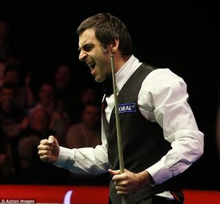

英格蘭職業的司諾克選手，衛冕世界冠軍，目前世界排名第一。他也是斯諾克領域不少紀錄的保持者，包括與史蒂芬·亨得利並列最多的職業時代7次世界冠軍。
他也是被廣泛認為是這項運動歷史上最偉大的球員之一。自1992年轉為職業選手以來，奧沙利文贏得了7次司諾克世界錦標賽冠軍，創紀錄的7個大師賽冠軍和創紀錄的7個司諾克英國錦標賽冠軍，在三大賽中一共獲得了21個冠軍，共計七次「三大賽」大滿貫紀錄，史無前例。[3]其更是僅有的11名職業大滿貫球員其中之一（即在三大賽中都奪過冠），並以39項排名賽冠軍位居歷史第1人。
在1993年的英國錦標賽中，以17歲358天的記錄，成為了拿到冠軍頭銜最年輕的選手。同時他也是在大師賽奪冠的最年輕的球員，1995年他以19歲69天的年齡贏得大師賽冠軍。在轉為職業選手之後，他已獲得39座排名賽冠軍，這也是創紀錄的。
他已經贏得了超過1100萬英鎊的職業獎金，是所有司諾克選手中第一高的。 另外，奧沙利文 和約翰·希金斯同樣在90年代、00年代、10年代和20年代都贏得過排名賽事的球員，目前僅有此二人能做到。
奧沙利文曾多次獲得世界排名第一，六次年終世界第一，加總起來時間超過7年。2019年3月，奧沙利文在贏得第一屆巡迴錦標賽冠軍後重返世界第一寶座，而他上一次排名世界第一還是2010年5月。時隔近九年重返世界第一也創造了司諾克歷史上兩次排名世界第一時間間隔的記錄。
奧沙利文是一名多次破百的球員，更是唯一打出超過1,100桿破百的球員。[5]截至2022年大師賽，更來到了1131桿單桿破百（centuries），持續刷新個人及世界紀錄。他在2019年球員錦標賽決賽中第14局達到1000桿破百的里程碑，並以10-4戰勝尼爾·羅伯森奪得該年此賽事冠軍。
截至2021年司諾克世界錦標賽，在職業比賽中他依舊是官方最多杆單桿滿分（147）紀錄保持人（15次），並在1997年世界錦標賽上以5分08秒的時間擊出了最快的滿分杆[6]，再創一項世界紀錄。他的綽號「火箭」（The Rocket）因而得名。他在2016年被授予大英帝國勳章。
前職業司諾克傳奇球星。前世界冠軍（球王）。深受全球斯諾克迷喜愛，退役後亦積極與同樣頂尖且偉大的斯諾克另一位傳奇球星史蒂夫·戴維斯參與各大賽事的球評與在其個人Instagram上創立「cue tips」的擊球及走位教學，對斯諾克領域即使退役仍不遺餘力。
他生於蘇格蘭愛丁堡。7次斯諾克世界錦標賽冠軍，5次斯諾克英國錦標賽冠軍，6次斯諾克溫布利大師賽冠軍，共計奪得5次斯諾克大滿貫紀錄。其世錦賽7度奪冠為目前有官方影像紀錄（1960年代）以來的世界之最，是公認的撞球史上最偉大的球手，有「斯諾克皇帝」美譽。其「進攻型打法」的創立對球壇產生了深遠的影響
其巔峰時期擁有絕佳控球與防守能力，同時具備強大心理素質及糾錯能力。他硬朗的球風與穩健的風格深受廣大球迷愛戴，並且他還有極致精準的中袋（middle pocket/side pocket）進球能力，這幫助他在90年代幾乎獨霸整座斯諾克球壇。生涯有776桿破百（截至2021年斯諾克世界錦標賽），其中包含11桿單桿147滿分紀錄。
趙豐邦（1967年9月15日－）台灣花式撞球運動選手，出身高雄市。他於1990年代至2000年代間多次獲得國際性重要花式撞球比賽的冠軍，也曾獲得該項運動的年度排名第一。
因為於比賽時無論大小比賽、何種強度的敵手，趙豐邦總是只有兩種表情－「面無表情」或是「面露冷笑」，讓敵手很難察覺趙豐邦的想法，因此媒體給趙豐邦的外號是「冷臉(面)殺手」。
1967年生於左營的趙豐邦於1983年就以撞球運動為「職業」，當初打的是「司諾克」。1986年台灣引進花式撞球，趙豐邦亦從司諾克轉打俗稱九號球，14-1，八號球的三款花式撞球，而這三種花式撞球球種，於90年代後，逐漸改成以九號球為主流，而他也改專攻於此。